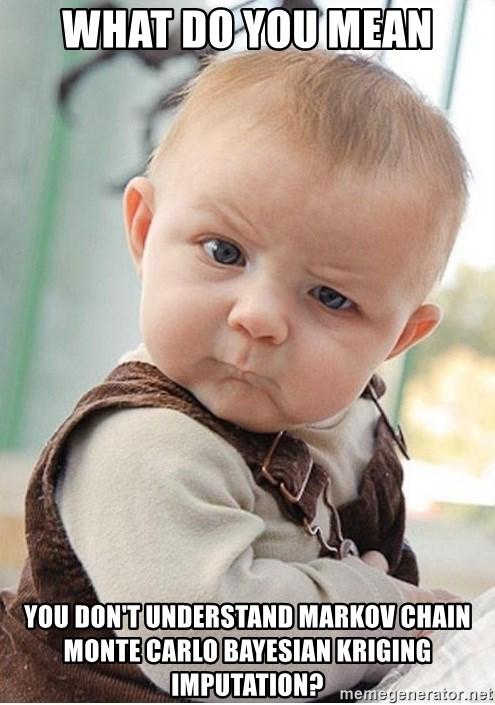

library(tidyverse)
library(ggdist)
library(brms)
library(insight)
library(performance)
theme_set(theme_light())
model_data <- read_csv(here::here("data", "births_and_under_five_by_county_2022_09_17.csv"))
tract_data <- read_csv(here::here("data", "under_five_by_tract_2022_09_19.csv"))Intro
In my previous post, I estimated risk of sudden unexpected infant death in census tracts while acknowledging that I was using the wrong denominator. I should have been using the count of live births in each census tract, but I have not been able to find counts of live births at such a fine geographic scale. The data we do have available from the U.S. Census is the count of children under five years old (5yo) per census tract, so I was using that as a proxy for the count of live births over a five year period. In the future, I want to be more accurately approximate the true denominator.
My objective for this blog post is to fit models of counts of live births regressed from counts of children under 5yo at the county level so I can estimate counts of live births at the census tract level.
Sidenote: Despite my enthusiasm for Bayesian statistics, I have little practice with fitting models using MCMC methods, so this is also a chance for me to explore doing so with the R package {brms}. Section 6.2 of “Bayes Rules” describes MCMC methods more in detail if interested, but if not, just note that when Bayesian models get sufficiently complex, you use MCMC sampling to approximate a model solution when it would otherwise be too mathematically difficult.

Data Exploration
Let’s start with some exploration of the variables and their relationships in the model data: Here’s a glimpse at what we’re working with:
Code
glimpse(model_data)Rows: 3,142
Columns: 3
$ GEOID <chr> "01099", "01079", "01077", "01097", "01009", "01067", "…
$ pop_under_five <dbl> 20733, 32924, 92729, 413210, 57826, 17205, 164542, 2970…
$ births <dbl> 1052, 1804, 4652, 27790, 3318, 837, 9488, 1513, 6555, 1…Univariate
Here is the distribution of our county-level target parameter, counts of live births:
Code
model_data |>
ggplot(aes(x = births)) +
stat_dotsinterval() +
labs(
title = "Counts of Live Births in Each County of the USA from 2015-2019",
x = "Count of Live Births",
y = "Density"
)This distribution is highly skewed right, so it’s hard to intuit visually. As a couple of supplements, here’s a table of percentiles:
Code
quantile(model_data$births) 0% 25% 50% 75% 100%
0 612 1481 3931 623037 And here is the same distribution on a log-transformed x-axis:
Code
model_data |>
ggplot(aes(x = births + 1E-10)) +
stat_dotsinterval() +
labs(
title = "Counts of Live Births in Each County of the USA from 2015-2019",
x = "Count of Live Births on Log Scale",
y = "Density"
) +
scale_x_log10()Notice the one county with an outlier of purportedly zero births.
Perhaps unsurprisingly, we observe similar trends from our predictor variable, the count of children under 5yo (pop_under_five):
Code
ggplot(model_data, aes(x = pop_under_five)) +
stat_dotsinterval() +
labs(
title = "Counts of Children Under 5yo in Each County of the USA from 2015-2019",
x = "Count of Children Under 5yo",
y = "Density"
)Code
quantile(model_data$pop_under_five) 0% 25% 50% 75% 100%
86.00 10902.50 25726.00 68072.75 10039107.00 Code
ggplot(model_data, aes(x = pop_under_five)) +
stat_dotsinterval() +
labs(
title = "Counts of Children Under 5yo in Each County of the USA from 2015-2019",
x = "Count of Children Under 5yo on Log Scale",
y = "Density"
) +
scale_x_log10()Bivariate
Let’s test whether our target variable and predictor have a linear relationship:
Code
model_data |>
correlation::cor_test(x = "pop_under_five", y = "births") |>
plot() +
labs(
x = "Count of Children Under 5yo",
y = "Count of Live Births"
)Awesome, the correlation coefficient is extremely high and the p value is below 0.01, let’s make a linear model! Not so fast, as noted earlier, it’s hard to assess these relationships visually, because they are so skewed. Indeed, if you log transform either axis, you start to see how the relationship breaks down:
Code
model_data |>
correlation::cor_test(x = "pop_under_five", y = "births") |>
plot() +
labs(
x = "Count of Children Under 5yo on a Log Scale",
y = "Count of Live Births"
) +
scale_x_log10()It looks like a linear line describes the relationship well in the middle range, but not so much at small or large values of the predictor variable. To get a better understanding, let’s go ahead and fit a linear model and check its assumptions:
Code
freq_linear_model <- lm(births ~ pop_under_five, data = model_data)
check_model(
freq_linear_model,
check = c("qq", "homogeneity"),
panel = FALSE
) |> plot()$HOMOGENEITY
$QQI won’t claim to be an expert at reading model diagnostics, but these plots pretty demonstrably suggest that the model is violating assumptions of homogeneity of variance as well as normality. As suggested by our previous scatterplot, this translates to the model poorly predicting birth counts at extreme values of the predictor variable. That’s not to say a linear model isn’t useful. I think especially if you were to subset it to data within a certain order of magnitude, it would perform decently well. But let’s see if we can do better than that!
Bayesian Modeling Using MCMC
As mentioned in the intro, I’m using this post as an opportunity to practice regression modeling under a Bayesian MCMC framework rather than the traditional Frequentist approach. Refer back to my last post on what makes Bayesian methods unique and when you might choose to use them. Long story short, they allow you to incorporate your prior knowledge into a model and they perform better when data is limited by small sample sizes or rare events. In this particular use case (predicting counts of live births from counts of children under 5yo), we have a large robust data set to draw upon, so I don’t expect Bayesian methods to perform that differently from Frequentist ones, but I figure that will make it easier to practice without the modeling process being too finicky.
Packages like {brms} and {rstanarm} make it easy to take a pre-existing Frequentist model and drop it into a Bayesian framework. For example you can take our previous linear model:
freq_linear_model <- lm(births ~ pop_under_five, data = model_data)And wrap it in the function brm() instead:
bayesian_linear_model <- brm(births ~ pop_under_five, data = model_data)If you’re following along at home, try not to be alarmed by long output produced by the code above. Basically, the software back-end is just sending you regular updates as it approximates the model solution.
To find a better fit for the data than that from linear regression, let’s try modeling the outcome as a negative binomial distribution. I expect this to be more accurate because it is designed to describe discrete, count variables and it is flexible enough to fit the data even when it is very right skewed. For an improved fit, I will also log transform the predictor variable to make it more closely approximate a normal distribution:
negbinomial_model <- brm(
births ~ log(pop_under_five),
data = model_data,
family = negbinomial()
)Let’s compute some metrics comparing relative performance between the two models:
Code
compare_performance(bayesian_linear_model, negbinomial_model, rank = TRUE) |> print_html()| Comparison of Model Performance Indices | ||||||
| Name | Model | R2 | RMSE | WAIC weights | LOOIC weights | Performance-Score |
|---|---|---|---|---|---|---|
| bayesian_linear_model | brmsfit | 0.99 | 2479.34 | 0.00e+00 | 0.007 | 50.00% |
| negbinomial_model | brmsfit | 0.98 | 2650.21 | 1.00 | 0.993 | 50.00% |
| NA | ||||||
The compare_performance() function’s ranking algortihm is a little confused because the linear model does better with the data at hand; it accounts for variance in the outcome slightly better (higher R2 metric) and has slightly smaller residuals from its predictions (smaller RMSE metric). However, its important to note that both R2 and RMSE are in similar orders of magnitude for both models. More importantly for us, the WAIC and LOOIC metrics strongly favor the negative binomial model. LOOIC and WAIC try to balance between accurately fitting the data at hand while maintaining generalizability to new data. Before we generalize though, let’s visualize what the negative binomial model’s fit looks like with the data at hand:
Code
pp_check(negbinomial_model) +
scale_x_log10() +
scale_color_manual(
values = c("red", "blue"),
labels = c("Observed", "Predicted")
) +
labs(
title = "Predictions Vs. Observations for Negative Binomial Model \n Predicting Counts of Live Births from Counts of Children Under 5yo",
x = "Live Birth Count",
y = "Density"
) 
The predicted blue distributions closely trace the observed red distribution, visually supporting the strong fit suggested by our metrics.
New Predictions
The differences in generalizability between the two models will become more apparent when we turn to the original goal and predict counts of live births at the census tract level. Remember that the U.S. Census provides estimates of the counts of children under 5yo in census tracts, but does not provide estimates of counts of live births. Here is the distribution of our predictor variable at the new geographic level:
Code
tract_data |>
ggplot(aes(x = pop_under_five)) +
stat_dotsinterval() +
labs(
title = "Counts of Children Under 5yo in \n Each Census Tract of Cook County Illinois from 2015-2019",
x = "Count of Children under 5yo",
y = "Density"
)Notice that the counts of children under 5yo at the tract level are distributed at much lower values than those at the county level (makes sense). This should make us cautious since we’ll be extrapolating our models to a new range of data. Let’s start with what the linear model predicts:
Code
tract_data$lm_predicted_births <- get_predicted(bayesian_linear_model, newdata = tract_data)
tract_data |>
ggplot(aes(x = lm_predicted_births)) +
stat_dotsinterval() +
labs(
title = "Counts of Live Births Predicted Using Linear Regression \n in Each Census Tract of Cook County, Illinois from 2015-2019",
x = "Linear Predicted Count of Live Births",
y = "Density"
)Uh oh, every single count is predicted by the linear model to be negative. You can’t have a negative count!
Let’s see how the negative binomial model does:
Code
tract_data$nbinom_predicted_births <- get_predicted(negbinomial_model, newdata = tract_data)
tract_data |>
ggplot(aes(x = nbinom_predicted_births)) +
stat_dotsinterval() +
labs(
title = "Counts of Live Births Predicted Using Negative Binomial Regression \n in Each Census Tract of Cook County, Illinois from 2015-2019",
x = "Negative Binomial Predicted Count of Live Births",
y = "Density"
)That makes much more sense, the predicted counts go no lower than zero, and these predictions correspond to tracts where the counts of children under 5yo were also zero:
Code
bind_rows(
head(arrange(tract_data, pop_under_five), 3),
slice_sample(tract_data, n = 3),
slice_max(tract_data, order_by = pop_under_five, n = 3)
)# A tibble: 9 × 4
GEOID pop_under_five lm_predicted_births nbinom_predicted_births
<dbl> <dbl> <gt_prdct> <gt_prdct>
1 17031980100 0 -344.9329 0.000000
2 17031980000 0 -344.9329 0.000000
3 17031670100 0 -344.9329 0.000000
4 17031821402 88 -339.3627 4.739437
5 17031808301 157 -334.9951 8.508460
6 17031230900 266 -328.0956 14.497711
7 17031803606 969 -283.5968 53.554069
8 17031020702 923 -286.5085 50.985029
9 17031842100 917 -286.8883 50.650037 The negative binomial model generalizes better and creates more sensible predictions in a new range of predictor values. In future work, I’ll use these estimated counts of live births to estimate the underlying risk process for sudden unexpected infant death. Thanks for reading!